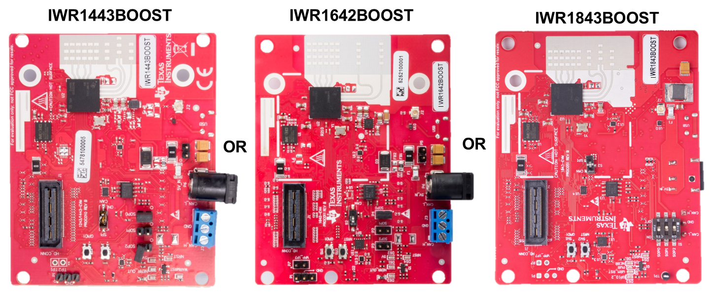
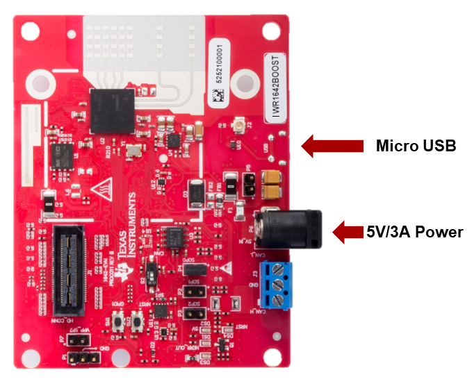
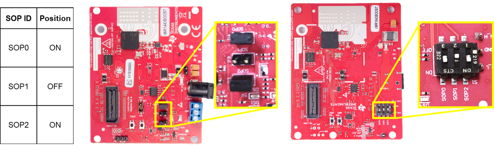
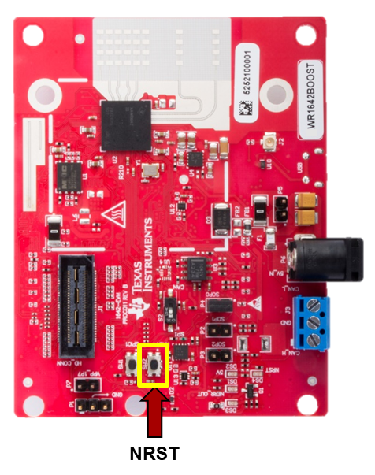

Hardware Setup of IWRXXXXBOOST for Flashing Mode
===========
This guide is intended for users of an IWRXXXXBOOST evaluation modules (EVM). The guide will walk through setting up the boards into **Flashing Mode**.

# 0. Requirements
### Required and Supported mmWave Evaluation Modules (EVM)
Quantity | Item
------------------|-----------------
1 | IWRXXXXBOOST Board: [IWR1443BOOST](http://www.ti.com/tool/IWR1443BOOST), [IWR1642BOOST](http://www.ti.com/tool/IWR1642BOOST), or [IWR1843BOOST](http://www.ti.com/tool/IWR1843BOOST)
### Additional Requirements
Quantity | Item | Details
---------|--------------------------|-----------------
1 | Micro USB Cable | Provided with the IWRXXXXBOOST board
1 | Power Supply | 5V, 3A with 2.1-mm barrel jack (center positive). The power supply can be wall adapter style or a battery pack with a USB to barrel jack cable.
# 1. Connect micro-USB and Power
* Connect the micro-USB to the EVM at the XDS110 and then to the PC.
* Connect the 5V/3A power supply to the power source and then to the EVM. LEDs on the carrier board should turn on.
As an example, the image below shows the connection points on an IWR1642BOOST. The location of connection points are similar for all IWRXXXXBOOST. **Note**: For the IWR1843BOOST the barrel jack connector for power is on the bottom side of the board.

# 2. Set SOP Mode for Flashing Mode
Enable flashing mode by setting SOP2:0 to 101 as shown below. Depending on the EVM, the board may have jumpers or switches to set the SOP Mode - refer to the image corresponding to your EVM type.

# 3. Toggle NRST switch
To ensure that the correct SOP mode is latched once power has been applied, power cycle by pressing and releasing the NRST switch identified below. The yellow DS4 LED below should toggle OFF and ON when the switch is depressed then released.

[[y! Toggling NRST
After any SOP mode change, NRST should be always be toggled to ensure a reliable boot-up state.
]]
<form>
<input type="button" value="Completed hardware setup for Flashing Mode. Return to User's Guide." onClick="javascript:history.go(-1)" />
</form>
Need More Help?
===========
* Consult the appropriate IWRXXXXBOOST User's Guide:
* [IWR1443BOOST User's Guide](http://www.ti.com/lit/pdf/swru518)
* [IWR1642BOOST User's Guide](http://www.ti.com/lit/pdf/swru521)
* [XWR1843BOOST User's Guide](http://www.ti.com/lit/pdf/spruim4)
* Search for your issue or post a new question on the [mmWave E2E forum](https://e2e.ti.com/support/sensor/mmwave_sensors/f/1023)